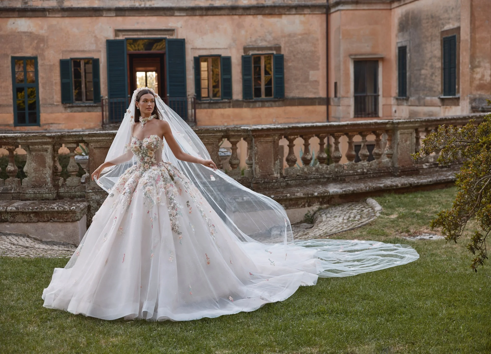

By Car
~15 Minutes
A quick run via the A49 and A573 into Warrington, with parking a few minutes from Fennel Street.

Sitting neatly between Warrington and St Helens, Newton-le-Willows brides barely have to travel at all. Wife To Be is around 15 minutes away via the A49 and A573, so from Earlestown to Winwick, Burtonwood to Vulcan Village, a first fitting is genuinely a quick trip out — not a whole day's expedition.

We're an official stockist of Sophia Tolli, Veni Infantino, Phoenix Gowns and White Rose, with more than 200 styles on the rails and dedicated plus-size collections. Being close means there's no rush — take your time, bring your people, and enjoy the part you'll remember forever.
About as close as it gets.
A quick run via the A49 and A573 into Warrington, with parking a few minutes from Fennel Street.
Regular trains from Newton-le-Willows and Earlestown towards Warrington, then a short walk or taxi.
Our Runcorn store handles men's suit hire by appointment, so both of you can be ready in one go.
After you've chosen your gown, our in-house team looks after every fitting, bustle and finishing touch. With us right on the doorstep, nipping back for a quick fitting is no bother at all — exactly how it should be.


You're only minutes away — grab your favourite people and come and find the dress. We'll have the boutique ready just for you.
Book Appointment